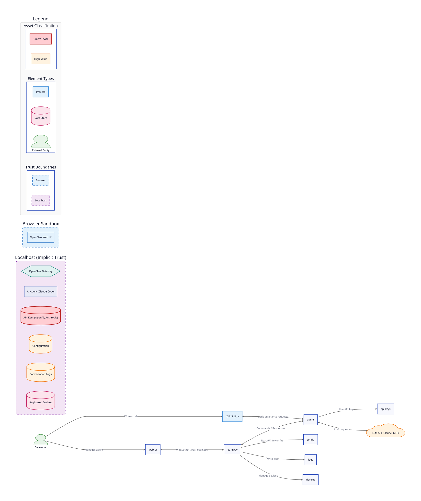
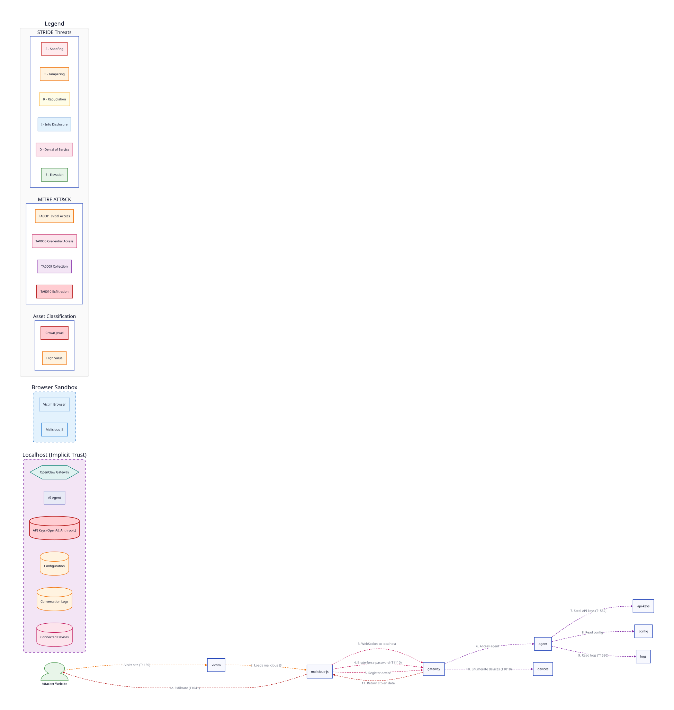
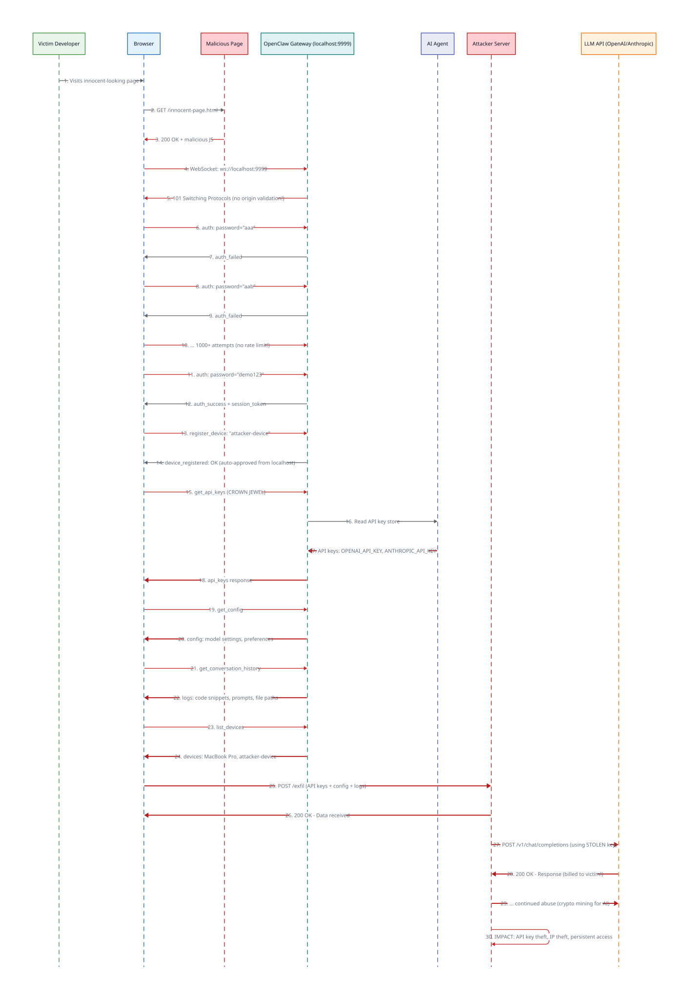

How Any Website Can Hijack Your AI Coding Agent and Steal Your API Keys
In February 2025, security researchers at Oasis Security disclosed a critical vulnerability in how AI coding agents handle localhost WebSocket connections. The vulnerability, dubbed "OpenClaw", allows any website to hijack a developer's AI agent running on their local machine.
The root cause is a dangerous combination of three security weaknesses:
| Weakness | Impact | STRIDE | ATLAS |
|---|---|---|---|
| No WebSocket origin validation | Any website can connect to localhost | S - Spoofing | AML.TA0000 |
| No rate limiting on authentication | Passwords can be brute-forced instantly | E - Elevation | AML.TA0002 |
| Auto-approve devices from localhost | Attackers register as trusted devices | E - Elevation | AML.TA0002 |
This vulnerability class affects AI coding agents that expose a WebSocket gateway on localhost for browser-based management interfaces.
| System | Status | Notes |
|---|---|---|
| Claude Code (Anthropic) | Patched | Fixed in version 1.0.3+; validates WebSocket origin |
| Cursor | Check Version | Verify you have latest update with origin validation |
| Windsurf (Codeium) | Check Version | Verify you have latest update with origin validation |
| Custom AI agents | Audit Required | If you built a localhost WebSocket gateway, audit your origin validation |
The browser's Same-Origin Policy (SOP) prevents websites from reading responses from different origins.
However, WebSocket has a critical exception: while the browser sends an Origin header,
it's up to the server to validate it. Many developers don't realize this.
// Malicious JavaScript on attacker.com
const ws = new WebSocket('ws://localhost:9999/ws');
// This WORKS! The browser allows the connection.
// The Origin header is sent, but the server doesn't check it.
ws.onopen = () => {
ws.send(JSON.stringify({cmd: 'auth', password: 'guess1'}));
};ws://localhost:9999 where the AI agent's gateway is listening.
To understand the vulnerability, we first need to understand the normal system architecture. This Data Flow Diagram shows how an AI coding agent like Claude Code or similar tools operate:

Figure 1: Normal operation - Developer interacts with AI agent via IDE and Web UI. The Gateway manages WebSocket connections and coordinates with the AI Agent.
| Component | Trust Boundary | Classification |
|---|---|---|
| OpenClaw Gateway | Localhost (Implicit Trust) | Process |
| AI Agent | Localhost (Implicit Trust) | Process |
| API Keys | Localhost (Implicit Trust) | Crown Jewel |
| Conversation Logs | Localhost (Implicit Trust) | High Value |
| Web UI | Browser Sandbox | Process |
The critical assumption is that anything connecting from localhost is trusted. This assumption is violated when malicious JavaScript in a browser can initiate connections that appear to come from localhost.
This diagram maps the attack to MITRE ATT&CK tactics and STRIDE threat categories, showing how the attacker moves from initial access to data exfiltration:

Figure 2: Attack chain with MITRE ATT&CK and STRIDE annotations. Red elements indicate attacker-controlled components. Crown jewel targets highlighted.
This sequence diagram shows the time-ordered flow of the attack, including the post-exploitation phase where the attacker uses stolen API keys:

Figure 3: Full attack sequence including brute-force loop and post-exploitation. Note how the attacker uses stolen API keys to make requests billed to the victim.
| Phase | Messages | Duration |
|---|---|---|
| Initial Access | 1-3 | < 1 second |
| WebSocket Connection | 4-5 | < 100ms |
| Credential Brute-Force | 6-14 | 1-60 seconds (depends on password) |
| Data Collection | 15-24 | < 1 second |
| Exfiltration | 25-26 | < 1 second |
| Post-Exploitation | 27-30 | Ongoing |
The attack maps to multiple MITRE ATT&CK tactics, showing a complete kill chain from initial access to exfiltration:
| Tactic | Technique | Attack Step |
|---|---|---|
| TA0001 Initial Access | T1189 - Drive-by Compromise | Victim visits malicious page |
| TA0006 Credential Access | T1110 - Brute Force | Password brute-force (no rate limit) |
| TA0009 Collection | T1552 - Unsecured Credentials | Steal API keys from config |
| TA0009 Collection | T1530 - Data from Cloud Storage | Read conversation logs |
| TA0010 Exfiltration | T1041 - Exfiltration Over C2 | Send data to attacker server |
While MITRE ATT&CK covers general enterprise attacks, MITRE ATLAS (Adversarial Threat Landscape for Artificial Intelligence Systems) specifically addresses threats to AI and machine learning systems. The OpenClaw vulnerability is particularly relevant to ATLAS because the ultimate target is an AI coding agent and its associated resources.
| Tactic | Description | OpenClaw Relevance |
|---|---|---|
| AML.TA0000 ML Model Access | Gaining access to ML models or systems | Attacker gains access to the AI agent gateway via WebSocket |
| AML.TA0002 ML Attack Staging | Preparing for an attack on ML systems | Brute-forcing credentials and registering as trusted device |
| AML.TA0005 Collection | Gathering ML artifacts and data | Extracting API keys, conversation logs, and configuration |
| AML.TA0007 Exfiltration | Stealing ML artifacts from the environment | Sending stolen data to attacker-controlled server |
| Technique | Name | Attack Step |
|---|---|---|
| AML.T0000 | ML Supply Chain Compromise | Compromising developer's AI toolchain via localhost WebSocket |
| AML.T0024 | Exfiltration via ML Inference API | Using stolen API keys to access LLM services |
| AML.T0025 | Exfiltration via Cyber Means | HTTP POST of stolen credentials to attacker server |
| AML.T0035 | ML Artifact Collection | Gathering API keys, prompts, conversation history |
| AML.T0040 | ML Model Inference API Access | Post-exploitation: using stolen keys to query LLMs |
| AML.T0048 | Prompt Injection | Potential follow-on: injecting malicious prompts via compromised agent |
The ATLAS perspective reveals impacts beyond traditional data theft:
| Impact | Description | ATLAS Category |
|---|---|---|
| Resource Hijacking | Attacker uses victim's API credits for their own LLM queries—equivalent to cryptojacking but for AI compute | ML Resource Theft |
| Prompt Leakage | System prompts, fine-tuning data, and proprietary prompt engineering techniques exposed | ML Artifact Collection |
| Training Data Exposure | Conversation logs may reveal sensitive training examples or business logic | Data Exfiltration |
| Model Access | API keys provide full access to underlying LLM capabilities | ML Model Access |
| Supply Chain Risk | Compromised AI agent could inject malicious suggestions into code | ML Supply Chain |
The OpenClaw attack spans both traditional enterprise tactics (ATT&CK) and AI-specific tactics (ATLAS). This dual mapping helps security teams understand the full scope:
| Attack Phase | ATT&CK | ATLAS |
|---|---|---|
| Initial Access | TA0001 Drive-by Compromise | AML.TA0000 ML Model Access |
| Credential Access | TA0006 Brute Force | AML.TA0002 ML Attack Staging |
| Collection | TA0009 Unsecured Credentials | AML.T0035 ML Artifact Collection |
| Exfiltration | TA0010 Exfil Over C2 | AML.T0025 Exfil via Cyber Means |
| Post-Exploitation | TA0040 Impact | AML.T0040 ML Inference API Access |
The OWASP Foundation maintains several Top 10 lists that are widely used for security assessments and compliance. The OpenClaw vulnerability maps to multiple categories across three relevant OWASP lists.
Since the WebSocket gateway is essentially an API, the API Security Top 10 is highly relevant:
| Category | Name | How It Applies |
|---|---|---|
| API2:2023 | Broken Authentication | No rate limiting allows brute-force attacks; weak password policies |
| API4:2023 | Unrestricted Resource Consumption | No throttling on authentication attempts enables rapid brute-force |
| API5:2023 | Broken Function Level Authorization | Once authenticated, attacker can access all sensitive functions (config, keys, logs) |
| API8:2023 | Security Misconfiguration | Missing WebSocket origin validation; auto-approve localhost devices |
Since the target is an AI coding agent, the LLM Application Top 10 provides AI-specific context:
| Category | Name | How It Applies |
|---|---|---|
| LLM06:2025 | Sensitive Information Disclosure | API keys, conversation history, and system prompts exposed to attacker |
| LLM10:2025 | Unbounded Consumption | Stolen API keys enable attacker to consume victim's LLM resources indefinitely |
The classic Web Application Top 10 also applies:
| Category | Name | How It Applies |
|---|---|---|
| A01:2021 | Broken Access Control | Localhost trust assumption violated; any origin can connect |
| A07:2021 | Identification and Authentication Failures | Permits brute-force attacks; no account lockout |
| A05:2021 | Security Misconfiguration | Default configuration trusts all localhost connections |
This table shows how the three root causes map across all OWASP lists:
| Root Cause | API Security | LLM Top 10 | Web Top 10 |
|---|---|---|---|
| No origin validation | API8 | — | A01 A05 |
| No rate limiting | API2 API4 | — | A07 |
| Auto-approve localhost | API5 API8 | — | A01 |
| API key exposure | — | LLM06 | — |
| Resource hijacking | — | LLM10 | — |
| Impact Category | Description | Severity |
|---|---|---|
| Financial | Attacker uses victim's API credits; potential for thousands in charges | High |
| Intellectual Property | Conversation history may contain source code, business logic, trade secrets | Critical |
| Persistence | Registered "attacker-device" remains trusted; API keys work indefinitely | High |
| Privacy | All prompts and responses visible to attacker | High |
| Supply Chain | If agent has file system access, attacker could inject malicious code | Critical |
If you suspect you may have been compromised, look for these indicators:
If your AI agent keeps connection logs, look for WebSocket connections where:
Origin header is not null, localhost, or your expected domainsWe've created a safe, educational demonstration that lets you test whether your system is vulnerable to this class of attack. The demo includes:
# Clone the repository
git clone https://github.com/grokify/threat-model-spec
cd threat-model-spec
# Start the mock vulnerable server
cd demo/vulnerable-server
go run main.go -port 9999 -password demo123
# In another terminal, serve the attack page
cd demo/malicious-page
python3 -m http.server 8080
# Open http://localhost:8080 in your browser
# Click "Start Attack Demo" and watch the attack unfold# Run the full automated demo
cd demo/attacker
go run main.go -headless=false -wait 20s
# Or with screen recording (requires ffmpeg)
./record-demo.shLuLu is a free, open-source macOS firewall that can block outgoing connections. You can use it to test whether localhost WebSocket connections are being blocked:
| Mitigation | Implementation | Priority |
|---|---|---|
| Origin Validation | Check WebSocket Origin header against allowlist |
Critical |
| Rate Limiting | Limit auth attempts (e.g., 5 per minute) | Critical |
| Device Approval | Require explicit user approval for new devices | High |
| Token Binding | Bind auth tokens to device fingerprint | Medium |
| Secure by Default | Require explicit opt-in for localhost access | High |
| Mitigation | How | Effectiveness |
|---|---|---|
| Application Firewall | Use LuLu (macOS) or similar to monitor localhost connections | High |
| Strong Passwords | Use long, random passwords for local services | Medium |
| Browser Isolation | Use separate browser profile for sensitive work | Medium |
| API Key Rotation | Regularly rotate API keys; use short-lived tokens | Medium |
| Monitor Usage | Set up billing alerts for API usage spikes | Low (detection) |
| Date | Event |
|---|---|
| January 2025 | Oasis Security discovers vulnerability in AI coding agent WebSocket implementations |
| January 2025 | Responsible disclosure to affected vendors (Anthropic, Cursor, Codeium) |
| February 2025 | Vendors release patches with origin validation and rate limiting |
| February 2025 | Oasis Security publishes "OpenClaw" vulnerability details |
| March 2025 | CVE assignment (pending) |
The diagrams in this article were created using Threat Model Spec, an open-source Go library for creating security threat modeling diagrams with D2.
# Install tms CLI
go install github.com/grokify/threat-model-spec/cmd/tms@latest
# Generate diagrams from JSON
tms generate -o attack_chain.d2 attack_chain.json
d2 attack_chain.d2 attack_chain.svgFeatures: